Visualisierung
multidimensionaler
Zusammenhänge
Richard Polzin
richard.polzin@rwth-aachen.de
Roadmap
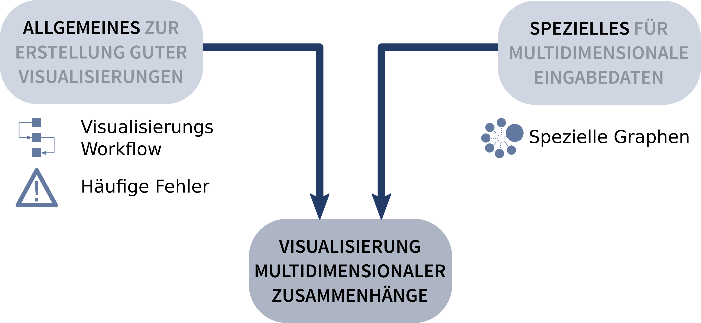Grundlagen
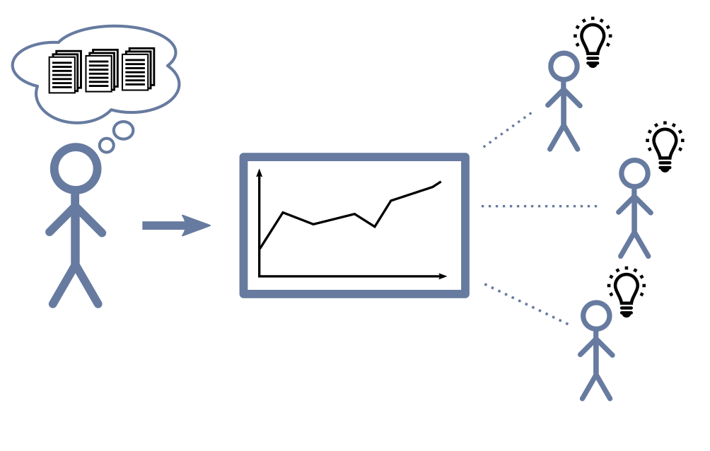
Visualisierungspipeline
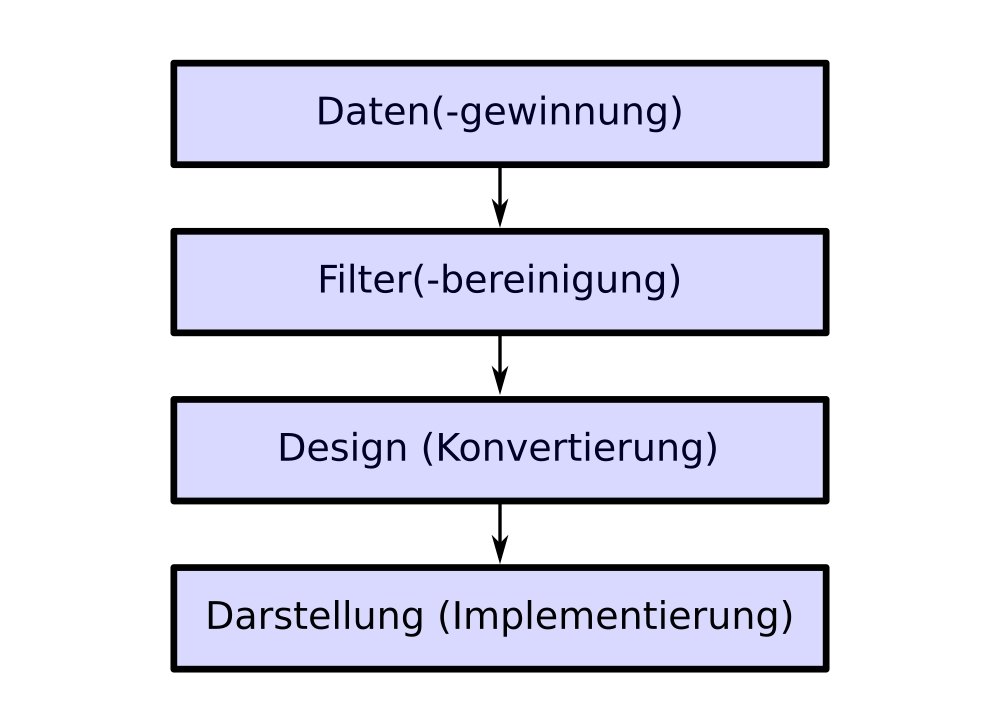
Irreführende Skalierung
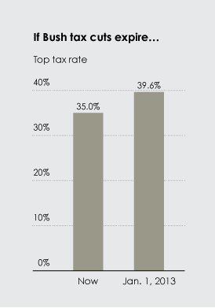Verzerrung durch Effekte
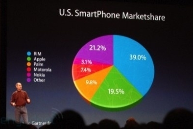 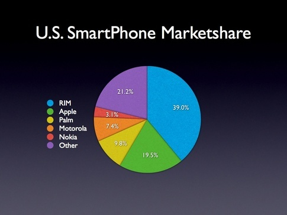Chartjunk
Data-Ink Ratio
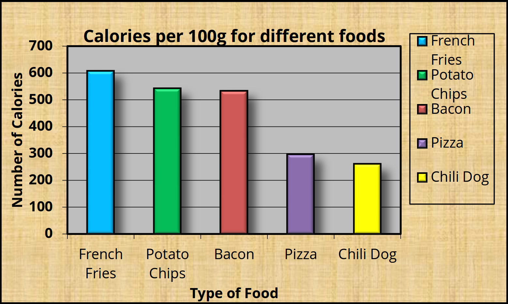 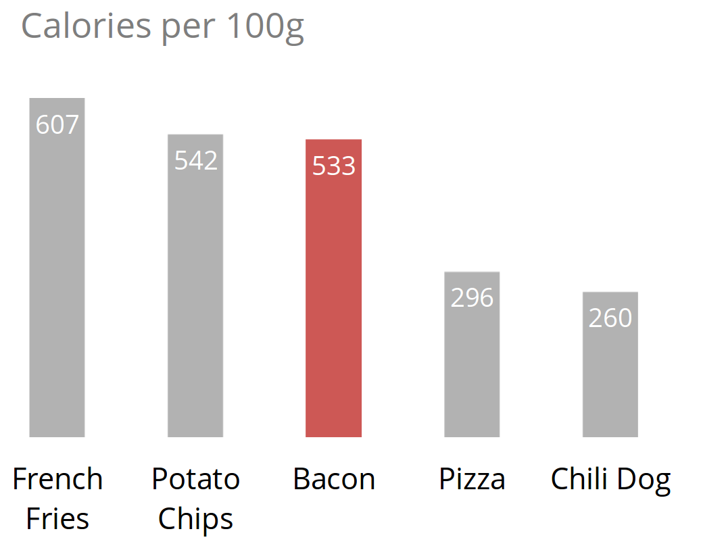Kreisdiagramme
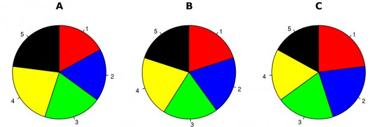
1- und 2-Dimensionale Daten
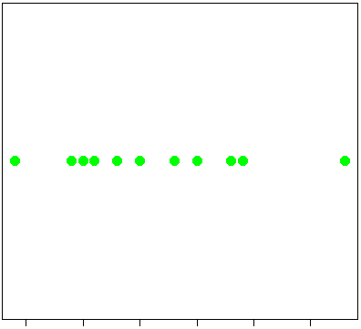 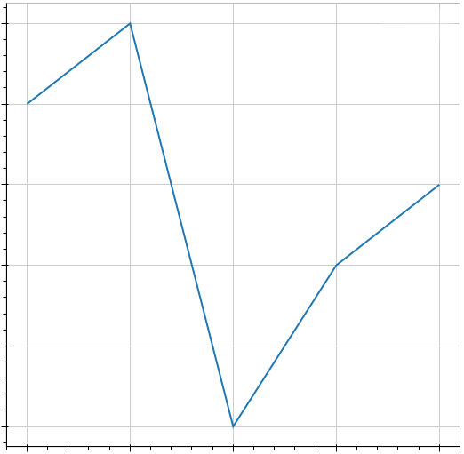 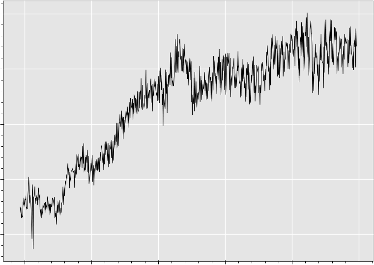
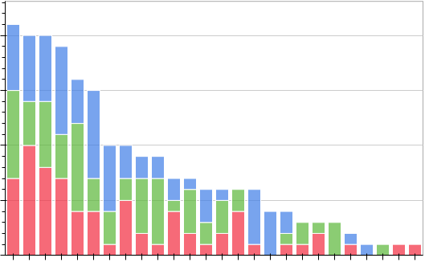
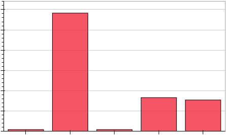

3-Dimensionale Daten
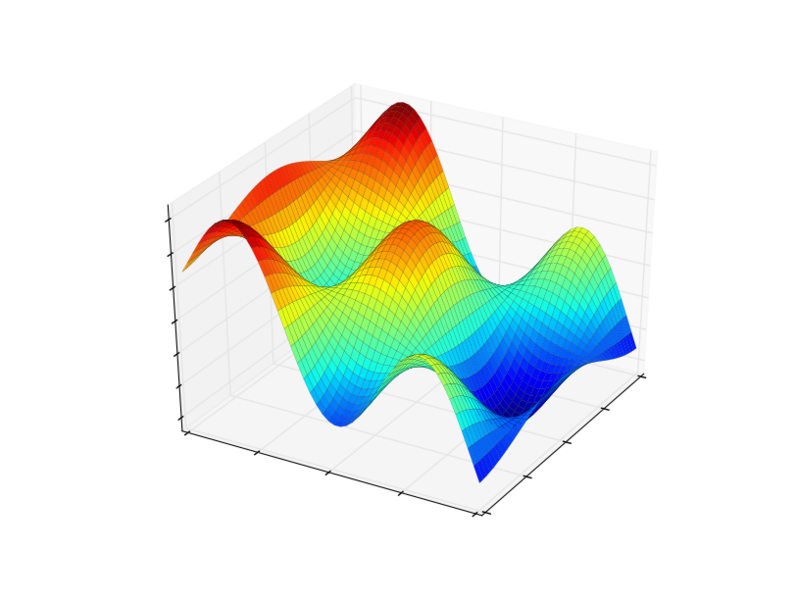 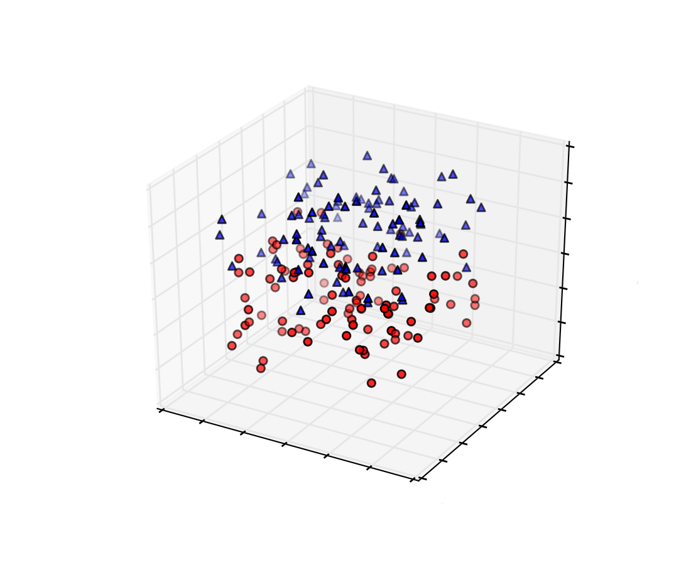
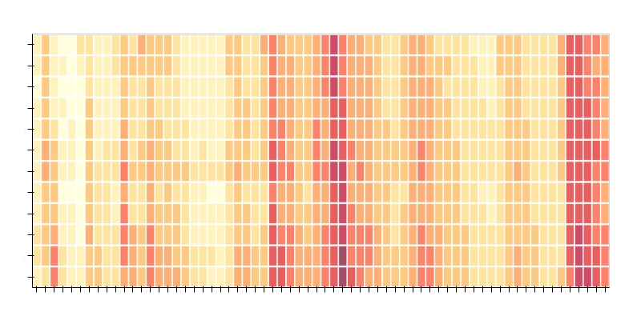
n-Dimensionale Daten
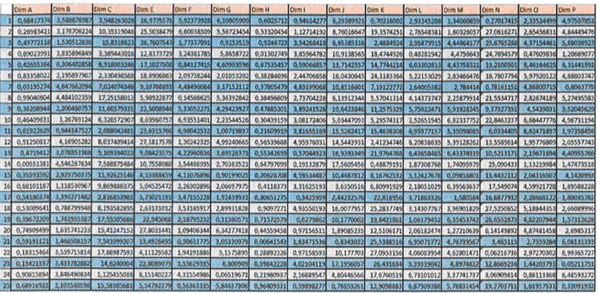
n-Dimensionale Daten
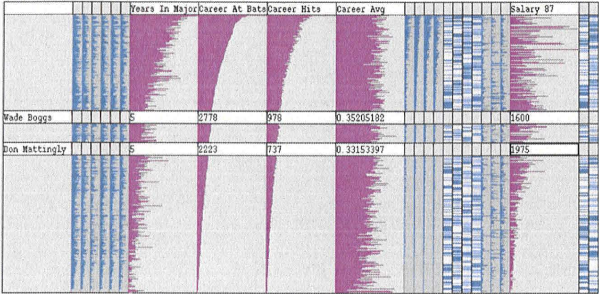
n-Dimensionale Daten
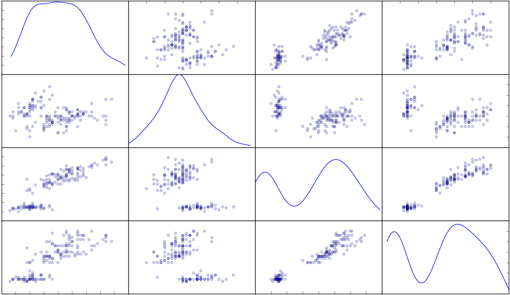
n-Dimensionale Daten
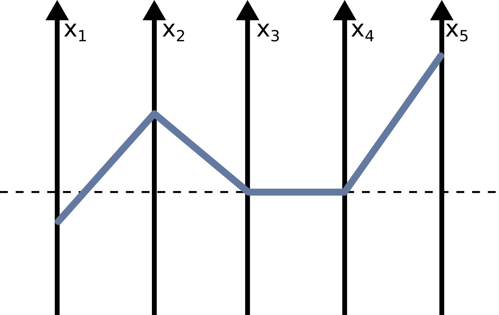
n-Dimensionale Daten
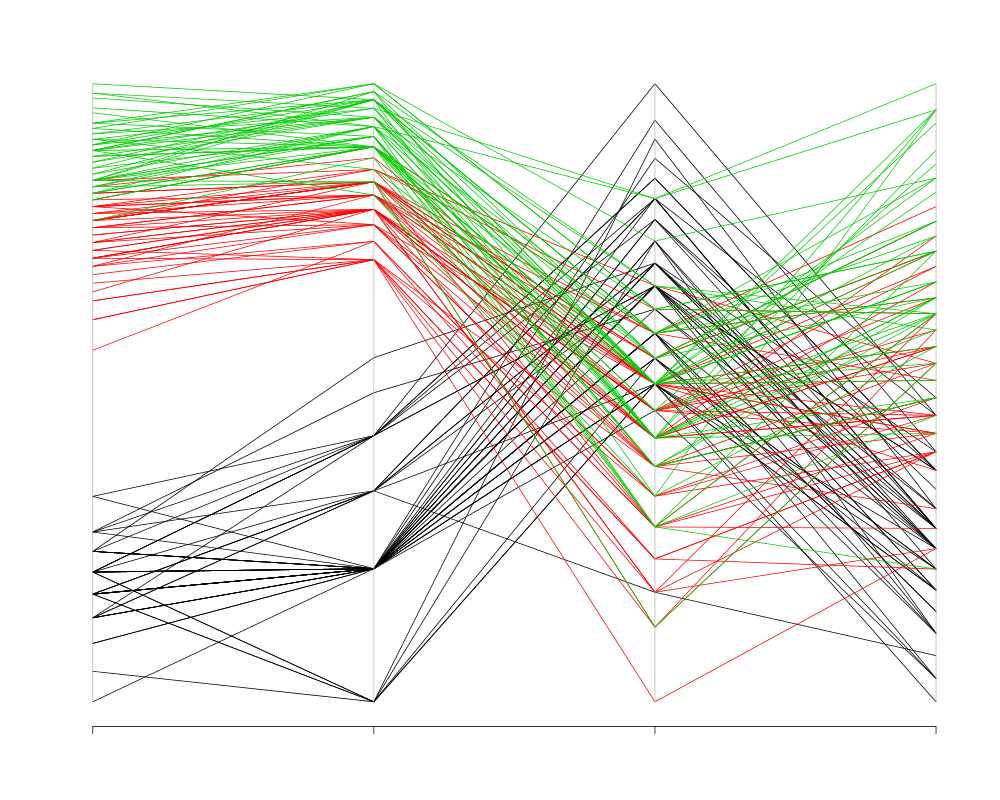
Zusammenfassung
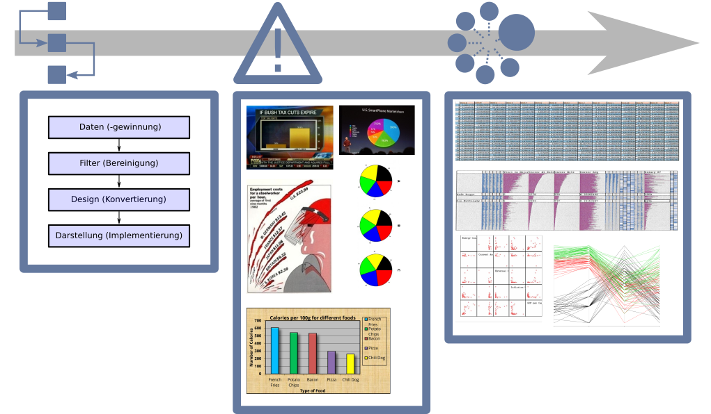
Quellen
Irrefführende Skalierung - Yau N. Fox News continues charting excellence [Internet]. [abgerufen am 14 Dec 2015]. Verfügbar unter: http://flowingdata.com/2012/08/06/fox-news-continues-charting-excellence/ Verzerrung durch Effekte - Lein AZ. Fictional Smartphone Market Share Numbers Are Fun [Internet]. [abgerufen am 14 Dec 2015]. Verfügbar unter: http://pocketnow.com/smartphone-news/fictional-smartphone-market-share-numbers-are-fun Chartjunk - Tufte ER. The visual display of quantitative information. Cheshire, CT, USA: Graphics Press; 1986. Data-Ink Ratio Darkhorse Analytics data Looks better naked [Internet]. [abgerufen am 16 Jan 2016]. Verfügbar unter: https://darkhorseanalytics.com/blog/data-looks-better-naked/ Kreisdiagramme - Schutz. Piecharts [Internet]. [abgerufen am 14 Dec 2015]. Verfügbar unter: https://en.wikipedia.org/wiki/File:Piecharts.svg 1- und 2-Dimensionale Daten - Z A. Visualizing principal components with R and Sachi Olympic Athletes [Internet]. [abgerufen am 14 Dec 2015]. Verfügbar unter: http://heuristicandrew.blogspot.de/2014/03/visualizing-principal-components-with-r.html - Analytics C. Stacked bar chart [Internet]. [abgerufen am 14 Dec 2015]. Verfügbar unter: http://bokeh.pydata.org/en/latest/docs/gallery/stacked_bar_chart.html - Analytics C. Ggplot line [Internet]. [abgerufen am 14 Dec 2015]. Verfügbar unter: http://bokeh.pydata.org/en/latest/docs/gallery/ggplot_line.html - Analytics C. Stacked bar chart [Internet]. [abgerufen am 14 Dec 2015]. Verfügbar unter: http://bokeh.pydata.org/en/latest/docs/gallery/stacked_bar_chart.html - Anonymous Psychology Research Methods: Core Skills and Concepts [Internet]. [abgerufen am 16 Jan 2016]. Verfübar unter: http://2012books.lardbucket.org/books/psychology-research-methods-core-skills-and-concepts/s16-03-expressing-your-results.html - Analytics C. Boxplot [Internet]. [abgerufen am 14 Dec 2015]. Verfügbar unter: http://bokeh.pydata.org/en/latest/docs/gallery/boxplot.html 3-Dimensional - Matplotlib Examples [Internet]. [abgerufen am 16 Jan 2016]. Verfügbar unter: http://matplotlib.org/examples/mplot3d/scatter3d_demo.html - Analytics C. Cat heatmap chart [Internet]. [abgerufen am 14 Dec 2015]. Verfügbar unter: http://bokeh.pydata.org/en/latest/docs/gallery/cat_heatmap_chart.html - Snow J. Mapping the 1854 London Cholera Outbreak [Internet]. 1986 [abgerufen am 18 Nov 2015]. Verfügbar unter: https://www.udel.edu/johnmack/frec682/cholera/ 3-Dimensionale Daten - Lehmann DJ, Albuquerque G, Eisemann M, Tatu A, Keim DA, Schumann H, et al. Visualisierung und analyse multidimensionaler datensätze. Informatik Spektrum [Internet]. 2010;33(6):589–600. Verfügbar unter: http://dblp.uni-trier.de/db/journals/insk/insk33.html#LehmannAETKSMT10 - Pandas [Internet]. [abgerufen am 16 Jan 2015]. Verfügbar unter: http://pandas.pydata.org/pandas-docs/version/0.15.0/visualization.html - Heinrich J. Parallel Coordinates [Internet]. [abgerufen am 15 Dec 2015]. Verfügbar unter: https://www.vis.uni-stuttgart.de/en/research/information-visualisation-and-visual-analytics/parallel-coordinates.html Alle Grafiken zu denen hire keine Quellen angegeben wurden sind entweder bereits durch eine Creative Commons Lizenz ohne Namensnennung oder eine Public Domain Lizenz freigegeben und können somit ohne angabe der Quelle verwendet werden. Jegliche andere Grafik ist im Rahmen dieses Vortrag erstellt worden und unter der Creative Commons 4.0 (CC-0) Lizenz verfügbar.